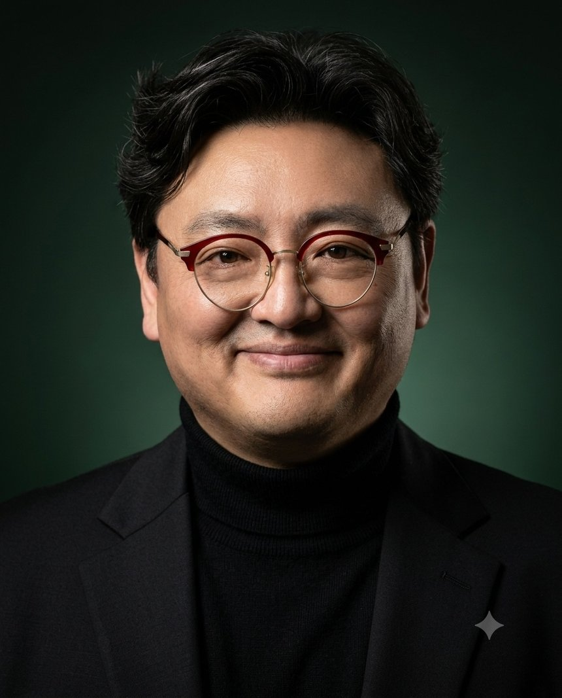
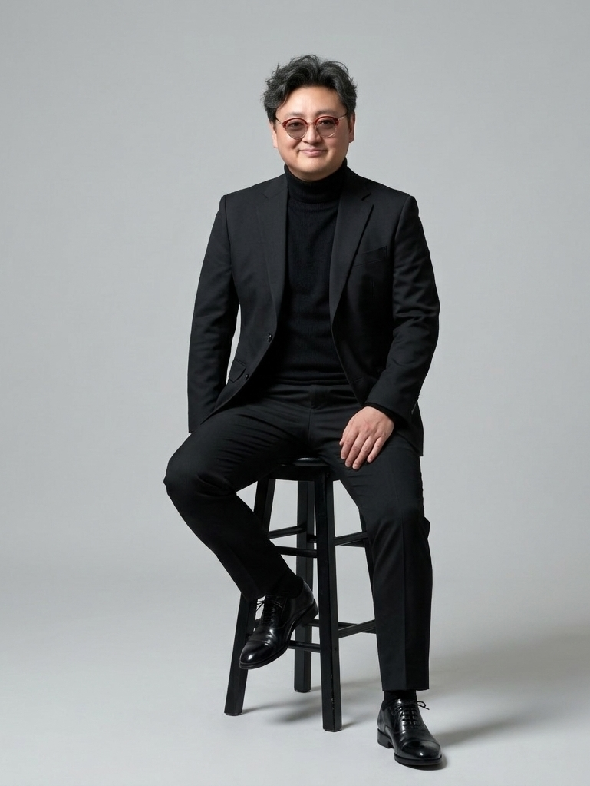
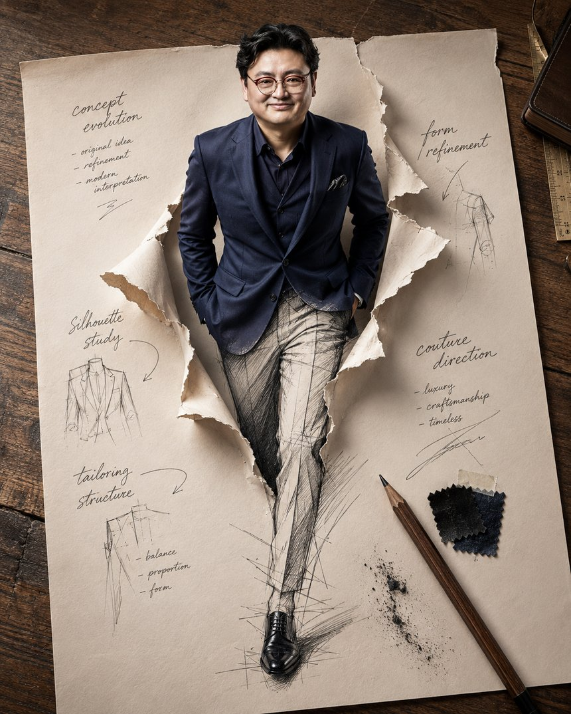
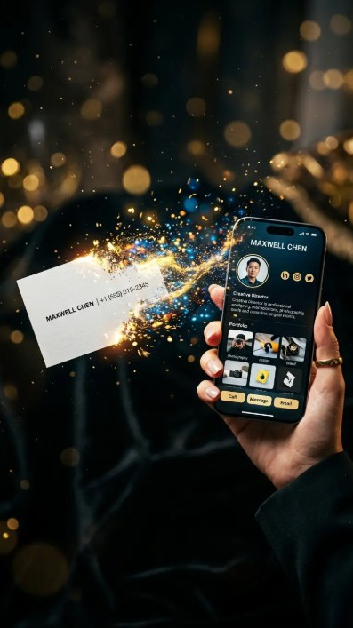
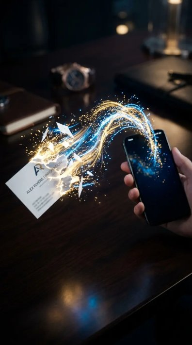
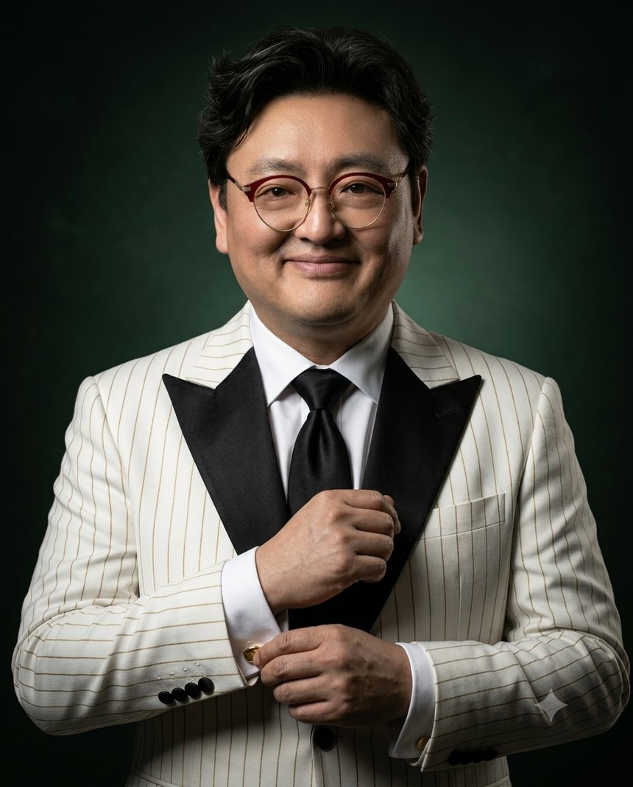

대표 · CEO / 앱 개발 · 디지털 브랜딩CEO & Founder / App Development · Digital Branding代表 · CEO / アプリ開発 · デジタルブランディング代表 · CEO / 应用开发 · 数字品牌

⚡ One Size Never Fits All⚡ One Size Never Fits All⚡ One Size Never Fits All⚡ One Size Never Fits All
"모든 사람에게 같은 답은 통하지 않는다.""The same answer never works for everyone.""すべての人に 同じ答えは通用しない。""同一个答案 不可能适用于所有人。"
흔한 템플릿이 아닌, 당신만의 고유한 정체성과 가치관을 디지털 세계에 구현합니다.Not a common template — I bring your unique identity and values to life in the digital world.ありふれたテンプレートではなく、あなただけの固有のアイデンティティと価値観をデジタル世界に実現します。不是千篇一律的模板，而是将您独有的身份与价值观在数字世界中实现。
ABOUT
전환을 만드는 사람, Transition MakerThe One Who Makes Transitions Happen転換をつくる人、 Transition Maker创造转变的人， Transition Maker
종이 명함이 디지털 명함으로, 스쳐 가는 인연이 관리되는 자산으로, 언어의 장벽이 비즈니스 기회로. T.M은 아날로그에서 디지털로 넘어가는 그 '전환'을 설계합니다. DiCA(디지털 명함) — CardBook(명함첩) — MANDU(번역 메신저)로 이어지는 하나의 연결 생태계를 만듭니다.Paper cards become digital cards. Passing encounters become managed assets. Language barriers become business opportunities. T.M designs the 'transition' from analog to digital — one connected ecosystem: DiCA (digital business card), CardBook (card wallet), and MANDU (translation messenger).紙の名刺はデジタル名刺へ、すれ違う縁は管理される資産へ、言語の壁はビジネスチャンスへ。T.Mはアナログからデジタルへのその「転換」を設計します。DiCA（デジタル名刺）— CardBook（名刺帳）— MANDU（翻訳メッセンジャー）へと続く一つの連結エコシステムを作ります。纸质名片变成数字名片，擦肩而过的缘分变成可管理的资产，语言障碍变成商业机会。T.M设计从模拟到数字的"转变"——打造由DiCA（数字名片）、CardBook（名片夹）、MANDU（翻译通讯软件）组成的互联生态系统。
흔한 템플릿에 끼워 맞추는 공장형 개발이 아닙니다. 클라이언트 고유의 철학과 가치관을 온전히 담아낸, 세상에 단 하나뿐인 디지털 브랜딩을 실현합니다.This is not factory-style development that forces you into common templates. I create one-of-a-kind digital branding that fully embodies each client's philosophy and values.ありふれたテンプレートに押し込む工場型開発ではありません。クライアント固有の哲学と価値観を丸ごと込めた、世界に一つだけのデジタルブランディングを実現します。这不是把客户塞进普通模板的工厂式开发。我们打造完整承载客户独有哲学与价值观的、世上独一无二的数字品牌。
WHY 02
도메인 크로스오버Domain Crossoverドメイン・クロスオーバー跨领域融合
15년의 메디컬 데이터 분석과 10년의 실전 F&B 경영 노하우를 모두 갖추었습니다. 비즈니스 생태계를 입체적으로 이해하기에, 단순 코딩을 넘어 실제 '돈이 되는 기획'을 제안합니다.15 years of medical data analysis plus 10 years of hands-on F&B management. Understanding business ecosystems in three dimensions, I go beyond coding to propose plans that actually make money.15年のメディカルデータ分析と10年の実戦F&B経営ノウハウを兼ね備えています。ビジネス生態系を立体的に理解しているからこそ、単なるコーディングを超えて実際に「お金になる企画」を提案します。兼具15年医疗数据分析经验与10年餐饮实战经营经验。因为立体地理解商业生态，所以超越单纯的编程，提出真正"能赚钱的企划"。
WHY 03
미니멀 스타트Minimal Startミニマル・スタート轻量起步
고비용 부담 때문에 시작조차 못 하는 일이 없도록 합니다. 아이디어의 본질만 정확히 추려내어, 가장 합리적인 비용으로 빠르게 시장에 진입할 수 있는 최적의 스케일업 라인을 설계합니다.No idea should die because of high costs. I distill your idea to its essence and design the optimal scale-up path to enter the market fast, at the most reasonable cost.高コストの負担で始めることすらできない、ということがないように。アイデアの本質だけを正確に抽出し、最も合理的なコストで素早く市場参入できる最適なスケールアップラインを設計します。不让任何想法因高成本而无法起步。精准提炼创意的本质，以最合理的成本设计快速进入市场的最优扩展路线。
DIFFERENCE
무엇이 다른가What Makes the Difference何が違うのか有何不同
01
니즈 디코딩Needs Decodingニーズ・デコーディング需求解码
기술만 아는 개발자는 클라이언트의 언어를 이해하지 못합니다. 정형화된 질문을 넘어, 사업가가 가진 진짜 니즈와 가치관을 정확하게 해석하여 시스템으로 구현합니다.Developers who only know tech don't speak the client's language. Beyond standardized questions, I accurately decode an entrepreneur's real needs and values, then build them into systems.技術しか知らない開発者はクライアントの言語を理解できません。定型的な質問を超えて、事業家が持つ本当のニーズと価値観を正確に解釈し、システムとして実現します。只懂技术的开发者无法理解客户的语言。超越程式化的提问，精准解读企业家真正的需求与价值观，并以系统实现。
02
명함첩까지 제공Card Wallet Included名刺帳まで提供连名片夹一起提供
"디지털 명함을 건네받으면 저장은 어떻게 하죠?" 받은 명함을 모으고 관리하는 명함첩(CardBook)까지 함께 제공합니다. 명함은 주는 것에서 끝나지 않습니다."When someone hands me a digital card, how do I save it?" CardBook, a wallet to collect and manage received cards, comes included. A business card doesn't end at giving.「デジタル名刺をもらったら、どうやって保存するの？」受け取った名刺を集めて管理する名刺帳（CardBook）まで一緒に提供します。名刺は渡して終わりではありません。"收到数字名片后要怎么保存？"我们连收集和管理名片的名片夹（CardBook）也一并提供。名片不是递出去就结束。
03
오너의 관점An Owner's Perspectiveオーナーの視点经营者视角
단순히 외주 작업을 납품하고 끝내지 않습니다. '오너의 관점'에서 클라이언트의 사업을 내 사업처럼 함께 고민하는 페이스메이커가 되어 드립니다.I don't just deliver outsourced work and walk away. From an owner's perspective, I become your pacemaker — thinking about your business as if it were my own.単に外注作業を納品して終わりにしません。「オーナーの視点」でクライアントの事業を自分の事業のように一緒に悩むペースメーカーになります。不是交付外包工作就了事。以"经营者的视角"，像对待自己的事业一样与客户共同思考，成为您的领跑伙伴。
04
한 장에 4개국어, 수정은 실시간4 Languages in One Card, Real-Time Updates1枚で4か国語、修正はリアルタイム一张名片4国语言，修改实时生效
한 장의 명함에 4개국어를 담고, 내용이 바뀌어도 다시 인쇄해서 나눠줄 필요가 없습니다. 링크는 그대로, 내용만 갱신됩니다.One card holds four languages. When your info changes, there's no reprinting or re-handing. The link stays; only the content updates.1枚の名刺に4か国語を収め、内容が変わっても再印刷して配り直す必要がありません。リンクはそのまま、内容だけが更新されます。一张名片承载4国语言，内容变更也无需重新印刷派发。链接不变，内容随时更新。
REFERRAL
이런 분을 소개해 주세요Please Introduce Me Toこんな方をご紹介ください请为我介绍这样的人
REFERRAL 01
🏢 중소·중견기업 CEO / 대표🏢 SME & Mid-Size Company CEOs🏢 中小・中堅企業のCEO / 代表🏢 中小·中坚企业CEO / 代表
✔회사의 첫인상을 중요하게 생각하는 대표님CEOs who value their company's first impression会社の第一印象を大切にする代表重视公司第一印象的代表
✔박람회 · 투자(IR) · 정부사업 · 미팅이 많은 분Frequent expos, IR, government projects, meetings展示会・投資（IR）・政府事業・ミーティングが多い方经常参加博览会·投资(IR)·政府项目·会议的人
✔홈페이지는 있지만 대표 개인 브랜딩이 약한 회사Has a website but weak personal branding for the CEOホームページはあるが代表個人のブランディングが弱い会社有官网但代表个人品牌薄弱的公司
✔명함보다 '브랜드'를 보여주고 싶은 분Wants to show a brand, not just a card名刺より「ブランド」を見せたい方想展示"品牌"而非名片的人
REFERRAL 02
🌏 해외 거래가 있는 기업🌏 Companies with Overseas Business🌏 海外取引のある企業🌏 有海外业务的企业
✔무역 · 제조 · 수출 기업Trading, manufacturing, export companies貿易・製造・輸出企業贸易·制造·出口企业
✔해외 구매대행 · 해외 바이어 상담Overseas purchasing agents, buyer consultations海外購入代行・海外バイヤー商談海外代购·海外买家洽谈
✔외국인 고객을 대상으로 하는 사업Businesses serving foreign customers外国人顧客を対象とする事業面向外国客户的业务
✔4개국어 명함 + 번역 메신저 MANDU가 무기가 됩니다A 4-language card + MANDU translator becomes your weapon4か国語名刺＋翻訳メッセンジャーMANDUが武器になります4国语言名片+翻译通讯MANDU将成为您的武器
REFERRAL 03
⚖️ 전문직 대표님⚖️ Professional Practice Owners⚖️ 専門職の代表⚖️ 专业人士代表
✔메뉴 · 예약 · 길찾기를 한 번에 담고 싶은 매장Stores wanting menu, reservations, directions in one placeメニュー・予約・道案内を一度に収めたい店舗想把菜单·预约·导航整合在一起的店铺
✔리뷰 · SNS 채널을 키우고 싶은 대표님Owners growing reviews and SNS channelsレビュー・SNSチャンネルを育てたい代表想壮大评价·社交媒体渠道的代表
✔10년 요식업 경영자였던 제가 그 마음을 가장 잘 압니다As a 10-year F&B operator myself, I know exactly how you feel10年外食業を経営した私が、その気持ちを一番よく分かります经营餐饮业10年的我，最懂您的心情
1 / 5
PORTFOLIO
당신의 사진이 이렇게 바뀝니다Your Photo, Transformed Like Thisあなたの写真が こう変わります您的照片 将这样蜕变평범한 사진 한 장이면 충분합니다. AI로 재해석한 프로필과 브랜드 이미지를 만들어 드립니다.One ordinary photo is all it takes. I create AI-reinterpreted profiles and brand images for you.普通の写真1枚で十分です。AIで再解釈したプロフィールとブランドイメージをお作りします。一张普通照片就足够。为您打造AI重新演绎的形象照与品牌图片。





1 / 5
위 이미지는 모두 실제 사진 한 장에서 만들어졌습니다.All images above were created from a single real photo.上の画像はすべて実際の写真1枚から作られました。以上图片均由一张真实照片生成。
15년의 메디컬 데이터 분석 경험 — 사람의 몸을 읽던 눈으로 비즈니스 데이터를 읽습니다.15 years of medical data analysis — reading business data with the same eyes that read the human body.15年のメディカルデータ分析経験 — 人の体を読んでいた目でビジネスデータを読みます。15年医疗数据分析经验 — 用解读人体的眼光解读商业数据。
🍳
F&B 경영 10년F&B Management, 10 YearsF&B経営 10年餐饮经营 10年
10년의 실전 F&B 브랜드 경영 및 사운드 브랜딩 — 현장에서 검증된 경영 감각.10 years of hands-on F&B brand management and sound branding — business instincts proven in the field.10年の実戦F&Bブランド経営およびサウンドブランディング — 現場で検証された経営感覚。10年餐饮品牌实战经营及声音品牌塑造 — 经现场验证的经营直觉。
🍷
네트워크Networkネットワーク人脉网络
부산 와인스쿨 52기Busan Wine School, 52nd Class釜山ワインスクール 52期釜山葡萄酒学校 第52期